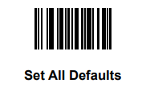
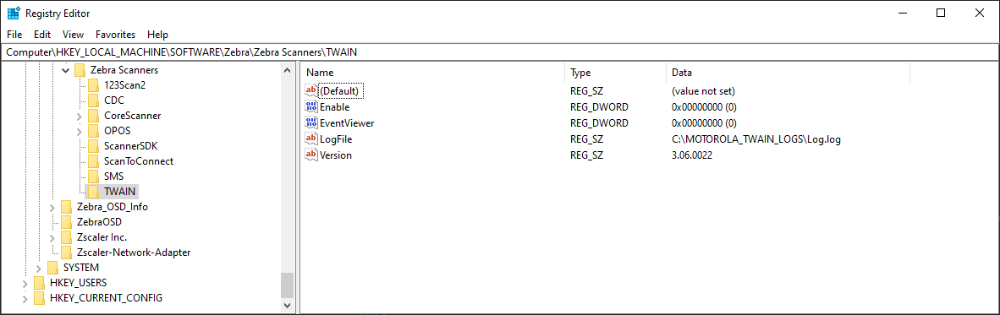

Overview
This chapter describes installation instructions and settings to configure the Zebra Scanner TWAIN driver on a host computer.
For custom installation instructions, refer to the Zebra Scanner SDK installation guide.
NOTE TWAIN components are installed by default with the standard Scanner SDK installation. If a custom Scanner SDK installation is performed, the TWAIN option must be selected to install the TWAIN driver components.
After a successful installation of the Zebra scanner TWAIN components, the Zebra TWAIN data source (TWAIN.ds) is located in one of the following folders:
- 32-bit version: %SystemRoot%\twain_32\Zebra
- 64-bit version: %SystemRoot%\twain_64\Zebra
The required Zebra core scanner drivers are located in the folder: %Program Files%\Zebra Technologies\Barcode Scanners\Common.
Configuration
Scanner Configuration Barcode
Scan the Set All Defaults bar code below to return all parameters to the scanner's default values. Refer to the scanner's Product Reference Guide for default values.
USB SNAPI Communication
IMPORTANT
Zebra image-capable scanner must be configured in USB SNAPI communication mode to be accessible through the Zebra Scanner TWAIN driver. Scan the USB SNAPI bar code below to configure the scanner for usage with the Zebra TWAIN driver.
Enabling Logging in the Zebra TWAIN Driver
The Zebra TWAIN driver provides two logging mechanisms to assist with troubleshooting.
- Application event logging viewable through the Windows Event Viewer under Windows Logs → Application.
- File logging.
To enable logging, follow these steps:
-
Using the regedit utility, go to the registry key: HKEY_LOCAL_MACHINE\SOFTWARE\Zebra\Zebra Scanners\TWAIN
Figure 1: HKEY_LOCAL_MACHINE Registry Key - To enable Windows application event logging, change the value of EventViewer from "0" to "1".
- To enable file logging, change the value of Enable from "0" to "1" and provide a valid file path as the value of LogFile. Ensure that the application has write permission to the location provided.
- Restart the application.